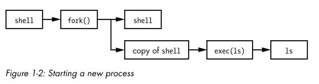

# Linux - Processes - Process creation & termination
## Process Creation
• When the system boots up, the kernels creates a process called
init ◇ init has a PID of 1
• init is the mother of all processes
◇ Every new process is a fork of fork of fork of etc. of init
• When a new process is created, an existing process clones itself using the
fork() system call
◇ fork() creates a mostly identical child process
◇ This child process takes on a new process ID (PID)
◇ And the original process becomes its parent process, wiht a parent process ID (PPID)
• The child process can:
◇ continue to use the same program its parent was using
◇ Or (more often) use the
execve() syscall to launch up a new program
◇
execve() destroys the memory management that the kernel put into place for that process and sets up new ones for the new program
Example:
You run ls in the terminal1. The shell calls
fork() to create a copy of the shell
2. The new copy of the shell calls
exec(ls) to run
lsProcess Termination
• The terminating process tells the kernel why it's terminating using a termination status
◇ A termination status of 0 means that process is exiting with no errors/it succeeded
• The parent process then uses the wait() syscall
◇ This checks the termination status of the child process
◇ It wants to know how/why the child process is terminating
Orphan Processes
• If a parent process dies before its child processes, the child processes become orphan processes
• The kernel recognises that it won't receive a wait() call from the parent process, so it puts the child processes under the care of init
• init will then perform the wait() syscall for the orphan child processes so that they can die
Zombie Processes
• If a child terminates without the parent process calling wait(), the kernel turns the child process into a zombie process
◇ This is because the kernel wants to know how the child process terminated
• The child process's resources get freed, however there'll still be an entry in the process table for the zombie process
• Zombie processes can't be killed, since they're technically “dead”
• If the parent process calls wait() (for whatever reason), the zombie process will disappear - knowing as “reaping”
◇ If the parent process doesn't call wait(), init will call wait() and remove the zombie process